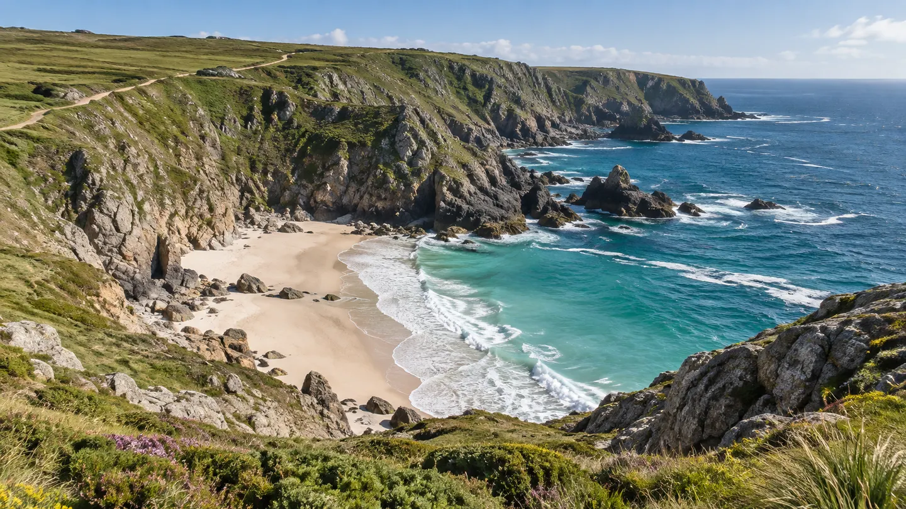

Wild coast.
A sandy cove, a changing tide, and days that leave room for the unexpected.
Plan a trip
A landscape
to start from.
An imagined coastal escape shaped around light, water, and open time. The landscape is generated and the schedule is illustrative; no real route, tide, or booking information is supplied.
A possible rhythm.
One way to shape 5 days. Change the duration in the planner.
Day 1Arrive without a full agenda
Settle in and keep the first part of the trip simple. This sample itinerary leaves the evening open.
Day 2Follow the shoreline mood
Build a day around looking at the coast, a relaxed meal, and time beside the water. This is not a navigation or tide guide.
Day 3Make room for a detour
Keep an open day for a local discovery you would research separately when planning a real journey.
Day 4Stay for the changing light
Return to a favorite view at another time of day and notice how the place feels different.
Day 5Leave a little room at the end
Pack, pause, and head home without turning the final morning into a checklist.
Keep it simple.
A few everyday items for your draft. Real travel preparation depends on the actual place and plans.